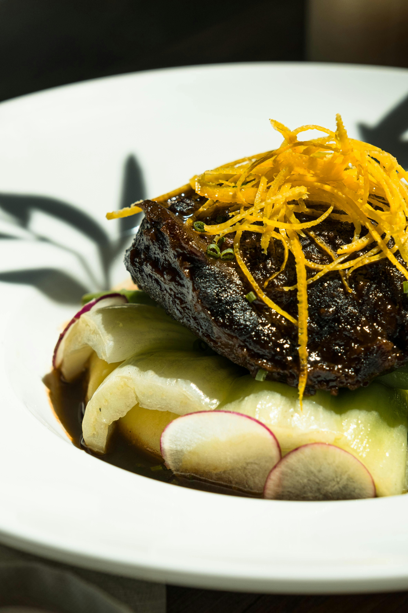

Braised beef

Home
Description
A traditional Italian recipe using hanger steak, served with black truffle mashed potatoes.
Prep Time
- Prep time: 35 minutes
- Cook Time: 2 hours 30 minutes
- Servings: 4
- Total Time: 2 hours 20 minutes to 4 hours 20 minutes
Ingredients
- Beef: Hanger steak, 2.2 lbs (1 kg), cut into 1.5–2 inch pieces
- Vegetables: 2 white onions, 2 carrots, 2 celery ribs, 2 garlic cloves
- Herbs & Seasonings: 3 sprigs rosemary, salt and black pepper to taste, 1 spoonful tomato paste
- Liquids: 2.1 cups (500 ml) full-bodied red wine (e.g., Chianti), 2.1 cups (500 ml) meat broth
- Oils & Fats: Extra virgin olive oil to taste
- For Mashed Potatoes: 1.8 lbs (800 g) waxy potatoes, 0.4 cup (100 ml) milk, 1.75 oz (50 g) butter, salt and pepper to taste
Step by Step
- Vegetable oil – Heat 2 tbsp in a Dutch oven over medium-high heat.
- Beef chuck roast (5 lbs) – Cut into 3–4 inch chunks, season with salt and pepper, then sear in batches until deeply browned on all sides. Remove and set aside.
- Fennel, onion, carrots – Sauté in the beef drippings over medium-low heat for 5 minutes until softened.
- Garlic – Add and cook for 2 minutes.
- Tomato paste (2 tbsp) – Stir in and cook for 1 minute until darkened and fragrant.
- Red wine (2½ cups) – Pour in to deglaze, scraping up browned bits from the pot bottom.
- Beef broth (1 cup) – Add with the wine or after, ensuring liquid comes halfway up the beef.
- Mushrooms – Stir into the liquid.
- Bay leaves, thyme sprigs – Add for aroma.
- Browned beef – Return to the pot in a single layer, nestling into the liquid (not submerged).
- Accumulated juices – Pour over the meat.
Cooking Steps
- Preheat oven to 350°F (175°C).
- After searing beef and sautéing vegetables, deglaze with wine and broth.
- Return beef to the pot, add herbs, and bring to a simmer.
- Cover and transfer to the oven. Braise for 2.5 to 3 hours, until fork-tender.
- Optional: Flip beef halfway through
- Remove beef, rest covered with foil. Strain and reduce sauce if desired.
- Serve beef with vegetables and thickened sauce